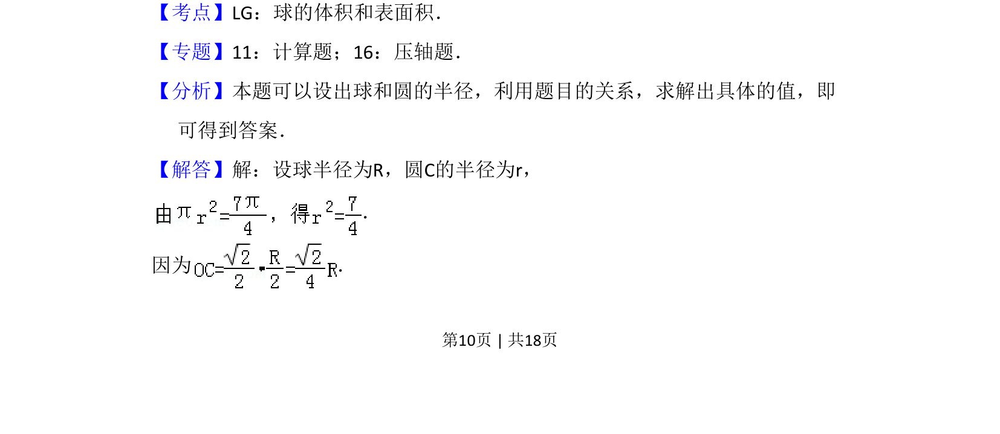
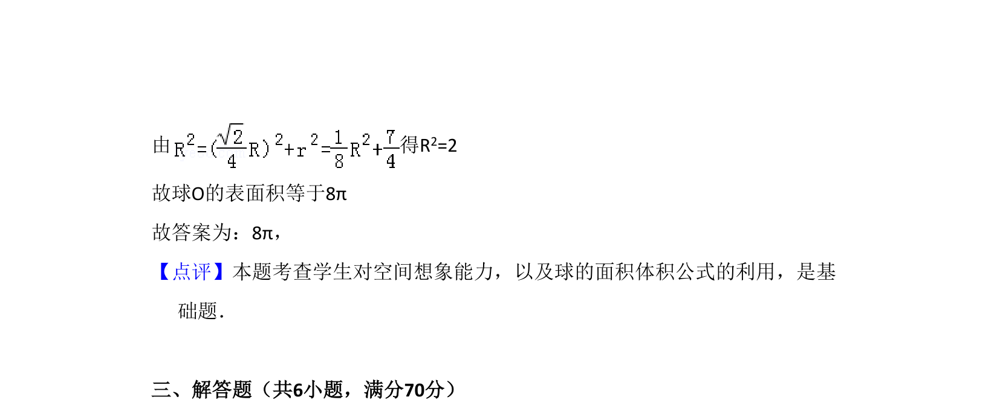

考点：球的表面积 截面圆性质 空间几何计算
该题考查球体被平面所截，利用截面圆半径、球半径及夹角关系求球的表面积。


📄 原 PDF 第 10 页：
素材/真题/吉林/2008-2024·（吉林）数学高考真题/2009年高考数学试卷（文）（全国卷Ⅱ）（解析卷）.pdf
16．（5分）设OA是球O的半径，M是OA的中点，过M且与OA成45°角的平面截 球O的表面得到圆C．若圆C的面积等于 ，则球O的表面积等于 8π ．
【考点】LG：球的体积和表面积．菁优网版权所有 【专题】11：计算题；16：压轴题． 【分析】本题可以设出球和圆的半径，利用题目的关系，求解出具体的值，即 可得到答案． 【解答】解：设球半径为R，圆C的半径为r， ． 因为 ．